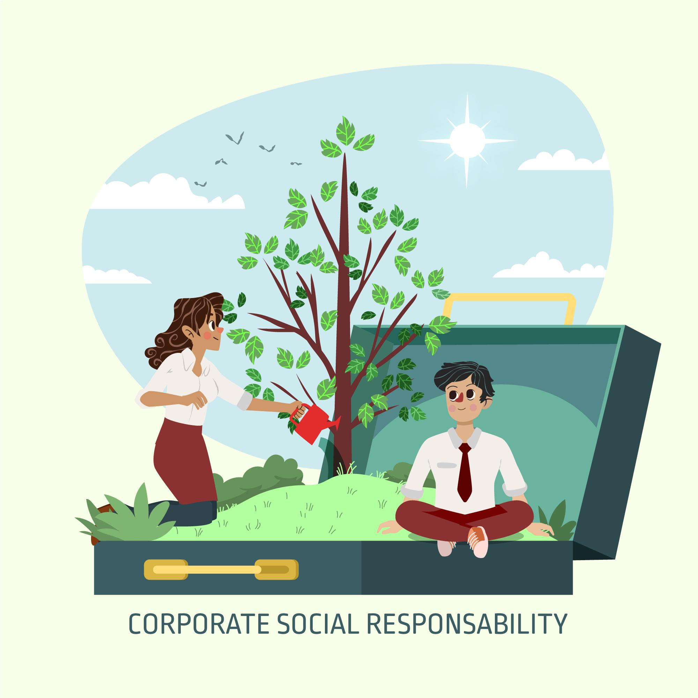

Our Goal
The primary goal of "Save Nature" campaigns is to protect and restore terrestrial ecosystems, manage forests sustainably, combat desertification, and halt and reverse land degradation and biodiversity loss. This aligns
with the Sustainable Development Goal 15, "Life on Land," which emphasizes the importance of healthy ecosystems and the services they provide.
These goals are crucial for ensuring a healthy planet and the well-being of future generations. By working together, individuals, communities, governments, and organizations can make a difference in protecting and
restoring our natural world.
To create awareness among people we conduct campaigns about save trees, plant trees. Many organizations have been involved in the campaigns that we conduct every year.
Campaigns
Our save nature campaign promotes environmental awareness and encourages actions to protect and preserve the planet's resources and ecosystems. It aims to inspire individuals and communities to adopt sustainable practices
and support organizations working to conserve nature.
Campaigns use various media, including social media, posters, and community events, to explain the importance of environmental conservation and the threats facing nature. Campaigns often focus on particular environmental
concerns, such as climate change, deforestation, pollution, or biodiversity loss.
Campaigns showcase successful conservation efforts and the positive impact of environmental action. Campaigns encourage people to reduce their environmental impact by adopting sustainable practices like reducing, reusing,
and recycling.
Campaigns encourage individuals to make conscious choices about the products they buy and the resources they use. Campaigns highlight the work of conservation organizations and encourage donations and volunteering. Campaigns
can pressure governments and institutions to adopt policies that promote environmental protection. Campaigns can encourage businesses to adopt environmentally responsible practices.
Some of our effective campaigns are highlighted below

At least one houseplant can significantly enhance home decor and air quality. Plants absorb carbon dioxide and release oxygen, purifying indoor air. Studies suggest that being around plants can improve mood
and reduce stress levels.

A "Gift a Plant" campaign can promote the idea of giving plants as thoughtful, lasting gifts. The campaign can highlight the positive aspects of plant gifting, such as bringing joy, improving air quality, and
fostering a sense of well-being.

Plants in corporate environment significantly enhance the employee well-being, increasing productivity, and creating a more positive atmosphere. They improve air quality, reduce stress, and even contribute to
noise reduction.